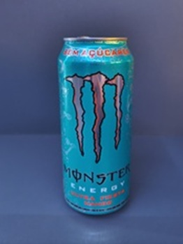
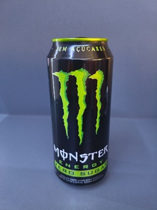
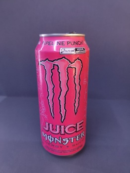
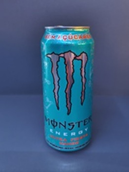

Em contra partida também tem os sabores zero açucares, onde temos como favoritos o branco dos adeptos de academia e a releitura do mango loco só que agora zero.
Ela estará categorizada por sabor favorito, básico bem feito, juices favoritos e zero açucares favoritos.
Mango loco um dos sabores favoritos de muitos e eu concordo com essa fala, é um dos sabores mais sensacionais que já provei dentro todos o monsters que tomei.
Os sabores preto tanto o clássico ou o zero açucar, demonstram com até no simples não tem errar onde garantem um sabor padrão e ao mesmo tempo intenso.
Agora dentro da marca existem chamados juices, energéticos baseados em sucos de frutas sendo os meus favoritos o com base de laranja e outro lembra pêssego.

Em contra partida também tem os sabores zero açucares, onde temos como favoritos o branco dos adeptos de academia e a releitura do mango loco só que agora zero.
